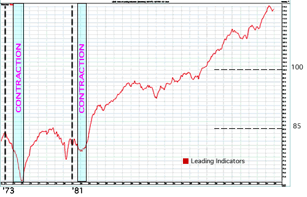
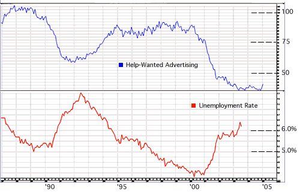
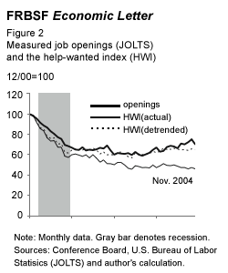

Conference Board: Introduction
There is one economic- and consumer-research organization that traders rely on to gauge the health of the U.S. economy: the Conference Board (CB), which is, of course, responsible for widely followed benchmarks such as the Index of Leading Indicators (now released for nine countries) and the Consumer Confidence Index, among others.
This tutorial deals with the methodology behind the various Conference Board data sets, as well as their historical results and market relevance. As we devote a chapter to explaining the purpose and construction of each indicator - including charts to illustrate past performance relative to the economy - we give insight into how to interpret these indicators for a trading advantage.
Conference Board: What Is It?
Before we take a closer look at the Conference Board's research and the indicators it provides, we need to have an understanding of its purpose, structure and various undertakings.
History
The CB was created in 1916 by industry leaders attempting to address the decline in public confidence toward business and the growing unrest among America's labor force. This growing sentiment became so prevalent that it threatened the stability and growth of the economy. CB organizers wished to create a not-for-profit cooperative of executives - free of propaganda and partisanship - that could objectively address issues impacting their various industries and society as a whole. Here are some things the Conference Board says about their mission on their website:
"The Conference Board creates and disseminates knowledge about management and the marketplace to help businesses strengthen their performance and better serve society.From the seed planted in 1916, the Conference Board has grown into a global resource with offices in 12 nations, representing 2,000 companies in 60 countries (as of 2005). U.S. member companies include such behemoths as Microsoft, Verizon Communications, Wal-Mart Stores and Boeing."Working as a global, independent membership organization in the public interest, we conduct research, convene conferences, make forecasts, assess trends, publish information and analysis, and bring executives together to learn from one another."
Companies - both large and small - can apply to join, and if accepted have access to a myriad of exclusive resources concerning a wide range of business issues. There are six main areas of research, each of which, under the leadership of a director who is an expert in his or her field, focuses on conducting research, organizing conferences, publishing reports as well as convenes working groups and councils. These are its six areas of research: corporate citizenship, corporate governance, economics, human resources, marketing/communications and strategy/planning.
Corporate Citizenship
Corporate citizenship deals with the relations between companies and the general public. According to its website, the CB "has been studying the interaction of corporations with their communities - areas such as environment, health and safety, community relations, corporate contributions and sustainability - since 1916".
No less than eleven CB-organized councils deal with areas involving corporate citizenship such as health and safety and environment management. Special initiatives in the corporate citizenship area are the 'Ron Brown Award for Corporate Leadership' - a bi-annual award - and the 'Townley Global Management Center for Environment, Health and Safety'.
Conferences on topics relating to corporate citizenship that the CB organizes include the 'Leadership Conference on Global Corporate Citizenship and Managing Diversity', an online seminar.
The CB conducts an annual survey on corporate contributions, and publishes the findings in an annual research report. Other publications on corporate citizenship include, Strategic Energy Management and Driving Toward Zero, a report on raising safety performance.
To learn about current initiatives/events in corporate citizenship, and to find out who the CB's current research director for corporate citizenship is, see this section of the CB website.
Corporate Governance
Corporate governance refers to the relationship between a company's shareholders, directors and management. CB conferences in this area include the 'Conference on Executive Coaching', and the 'Enterprise Learning Strategies Conference'.
Some of the corporate-governance research reports include, Improving Communications Between Companies and Investors, and Ethics Programs, The Role of the Board: A Global Study. Other projects are the 'Global Corporate Governance Research Center', the 'Commission on Public Trust and Private Enterprise', and the 'Directors' Institute'.
To learn about CB's current initiatives/events in corporate governance, and who the current research director in this area is, see this section of the CB website.
Economics
Of all resources provided by the CB, that which is of most interest to traders is the economic research and consumer-survey data. Some of these releases include the Business Cycle Indicators, the Consumer Confidence Index, the Help-Wanted Advertising Index and the CEO Confidence Index, to name a few.
CB economic publications include Straight Talk, a monthly publication of economic analysis geared toward business executives, and Business Executives' Expectations.
To learn about CB's current initiatives/events in economics, and who this research center's current director is, see this section of the CB website.
Human Resources (HR) / Organization
The concerns of the CB's research on human resources (as outlined in the CB's website) are "compensation, benefits, diversity, leadership, organization structure, productivity, performance measurement, recruitment, retention, training, development and work-life".
Some examples of other projects include the 'Conference on Executive Coaching', a research report titled, Measuring More Than Efficiency and a working group called 'Aligning Performance Measures with Business Objectives'. One of the more interesting features of the CB's resources on HR is its collection of more than 300 corporate organization charts available for purchase via their website.
To learn about CB's current initiatives/events in human resources, and who the principle researcher in this area is, see this section of the CB website.
Marketing/Communications
On this topic, the CB offers material on marketing, corporate communication, sales, customer management and branding. Some examples of conferences and publication include the 'Customer Experience Management Conference' and a research report entitled Managing Customer Data for Strategic Advantage.
To learn about CB's current initiatives/events in marketing/communications, and who the principle researcher in this area is, see this section of the CB website.
Strategy/Planning
According to their website, "The Conference Board's offerings in strategy and planning will help you manage your costs, knowledge and supply chain, and provide you with the latest information on mergers, quality, security, outsourcing, finance, taxation, and legal affairs."
Examples of strategy and planning resources include, the 'Enterprise Learning Strategies Conference', a research report titled, CEO Challenge 2004: Top Ten Challenges (Executive Summary), and the 'Strategic Workforce Planning' working group.
Special initiatives consist of the 'Corporate Preparedness, Security and Response Network', dedicated to disaster preparedness, and the Conference Board Europe's 'Value Chain Network', dedicated to improving efficiency along the supply chain.
To learn about CB's current initiatives/events in marketing/communications, see this section of the CB website.
Summary
The resources provided by the Conference Board have become essential to conducting business in the global marketplace. An executive would be remiss to ignore the timely research and resources the CB provides - for, undoubtedly, his or her competition is paying close attention.
The same is true for financial traders, who would be foolish not to study the lessons of the CB's widely followed research. Fortunately for traders, most of the economic publications from the CB are made available free of charge via press releases.
Conference Board: Composite Index Of Leading Indicators
The purpose of the Board's Business Cycle Indicators (BCI) is to provide ways for analyzing the expansions and contractions of the economic cycle. The Composite Index of Leading Indicators is one of three components of the BCI - the other two are the Composite Index of Coincident Indicators and the Composite Index of Lagging Indicators.
Since the leading-indicators component attempts to judge the future state of the economy, it is by far the most widely followed. But before we explore its components and the ways in which it is interpreted, let's take a look at some background of the overall BCI.
Early History of Business Cycle Indicators
After the disaster of the Great Depression, economists were eagerly searching for ways to detect the next economic downturn. The development of the BCI started in the 1930s as Arthur Burns and Wesley Mitchell of the National Bureau of Economic Research (NBER) began experimenting with the patterns showing up in the NBER's data. They called these patterns business cycles, and in their 1946 book "Measuring Business Cycles" described them as: "consist of expansions occurring at about the same time in many economic activities, followed by similarly general recessions, contractions, and revivals which merge into the expansion phase of the next cycle".
This early research represents the beginning of the study of the business cycle by means of economic indicators. Much of the following development of this 'indicator approach' was pursued at the NBER under the supervision of Dr Geoffrey Moore, an economics researcher who developed the concept of leading, lagging and coincident business-cycle indicators, and is still considered the "father of the leading indicators".
By the late 1960s, the U.S. Department of Commerce was producing material resembling the model for the Board's current BCI. The CB became the official publisher of the BCI, taking over from the government, in Dec 1995. Today, it releases the BCI for Mexico, France, the United Kingdom, South Korea, Japan, Germany, Australia, Spain and, of course, the United States.
Methodology Behind Indexes of the BCI
The three BCI indexes are called composite indexes because they incorporate multiple data components. According to their report Using Cyclical Indicators (2004), the Board makes six considerations when choosing an appropriate cyclical component for any index. These six considerations are carried about with the following six statistical and economic tests:
- Conformity - The data series must conform consistently in relation to the business cycle.
- Consistent timing - The series must exhibit a consistent timing pattern as a leading, coincident or lagging indicator.
- Economic significance - Its cyclical timing must be economically logical.
- Statistical adequacy - The data must be collected and processed in a statistically reliable way.
- Smoothness - Its month-to-month movements must not be too erratic.
- Currency - The series must be published on a reasonably prompt schedule, preferably every month.
So, since few single components meet all six criteria, the Conference Board compiles multiple components into each of the indexes of the BCI.
Methodology of the Index of Leading Indicators
The Index of Leading Indicators incorporates the data from 10 economic releases (which we review below) that traditionally have peaked or bottomed ahead of the business cycle. The exact formula for calculating changes in the leading index is rather involved but not necessary for understanding the indicator from our perspective here. (However, if you are interested, the formula can be found here on the Board's website).
Each of the 10 components is averaged, and a standardization factor is applied to equalize volatility. (You can find the current standardization factors here.) In 1996 the value of the Index of Leading Indicators was re-based to represent the average value of 100, and the CB releases the data on a monthly basis. Below are the ten components that make up the composite indicator (charts of each component can be found here).
The 10 Components
- Average weekly hours (manufacturing) - Adjustments to the working hours of existing employees are usually made in advance of new hires or layoffs, which is why the measure of average weekly hours is a leading indicator for changes in unemployment.
- Average weekly jobless claims for unemployment insurance - The CB reverses the value of this component from positive to negative because a positive reading indicates a loss in jobs. The initial jobless-claims data is more sensitive to business conditions than other measures of unemployment, and as such leads the monthly unemployment data released by the Department of Labor.
- Manufacturer's new orders for consumer goods/materials - This component is considered a leading indicator because increases in new orders for consumer goods and materials usually mean positive changes in actual production. The new orders decrease inventory and contribute to unfilled orders, a precursor to future revenue.
- Vendor performance (slower deliveries diffusion index) - This component measures the time it takes to deliver orders to industrial companies. Vendor performance leads the business cycle because an increase in delivery time can indicate rising demand for manufacturing supplies. Vendor performance is measured by a monthly survey from the National Association of Purchasing Managers (NAPM). This diffusion index measures one-half of the respondents reporting no change and all respondents reporting slower deliveries.
- Manufacturer's new orders for non-defense capital goods - As stated above, new orders lead the business cycle because increases in orders usually mean positive changes in actual production and perhaps rising demand. This measure is the producer's counterpart of new orders for consumer goods/materials component (#3).
- Building permits for new private housing units - Building permits mean future construction, and construction moves ahead of other types of production, making this a leading indicator.
- The Standard & Poor's 500 stock index - The S&P 500 is considered a leading indicator because changes in stock prices reflect investor's expectations for the future of the economy and interest rates. The S&P 500 is a good measure of stock price as it incorporates the 500 largest companies in the United States.
- Money Supply (M2) - The money supply measures demand deposits, traveler's checks, savings deposits, currency, money market accounts and small-denomination time deposits. Here, M2 is adjusted for inflation by means of the deflator published by the federal government in the GDP report. Bank lending, a factor contributing to account deposits, usually declines when inflation increases faster than the money supply, which can make economic expansion more difficult. Thus, an increase in demand deposits will indicate expectations that inflation will rise, resulting in a decrease in bank lending and an increase in savings.
- Interest rate spread (10-year Treasury vs. Federal Funds target) - The interest rate spread is often referred to as the yield curve and implies the expected direction of short-, medium- and long-term interest rates. Changes in the yield curve have been the most accurate predictors of downturns in the economic cycle. This is particularly true when the curve becomes inverted, that is, when the longer-term returns are expected to be less than the short rates.
- Index of consumer expectations - This is the only component of the leading indicators that is based solely on expectations. This component leads the business cycle because consumer expectations can indicate future consumer spending or tightening. The data for this component comes from the University of Michigan's Survey Research Center, and is released once a month.
The yellow line on the chart below represents the value of the CB's Index of Leading Indicators from Aug 1972 to Dec 2005 with the range of values from 72 to 116 (normalized in 1996 to equal 100).
{kind=link}
The chart shows that the Index of Leading Indicators began its decline in the first month of 1973, and (separate) data from the NBER suggests that the U.S. economy was contracting from Nov 1973 until Mar 1975. A similar period of contraction occurred from July 1981 through Nov 1982, and, again, the Index of Leading Indicators had put in a top well ahead of the overall business cycle.
The upward drift of the chart is less relevant than the location of the peaks and troughs, as they are the formations that signal changes in the business cycle.
Interpretation
There is a rule of thumb that states that three consecutive declines in the Index of Leading Indicators over three months signals a coming recession. Unfortunately, this rule is far too rigid to work routinely in real life: this three-steps-down technique has emitted at least one false signal in six of the eight expansions that came before Feb 2005. Thus, some economists, before anticipating a recession, prefer to see a sharp, prolonged decline (of more than 1%) in the leading index, accompanied by broad-based declines in the 10 components. In fact, many people have found that the breadth of the decline - that is, how many of the 10 components are declining - is as important as the depth.
For this reason, economists often refer to the CB's diffusion index when judging the moves in the leading index. The diffusion index can measure the breadth of a move in any BCI index, showing how many of an index's components are moving together with the overall index. Here are the steps involved in the way the Conference Board constructs the diffusion index for the BCI series:
|
So, applied to the leading index, the diffusion index simply represents how many of the 10 components are moving in agreement with the overall leading index. Here's a quote from the CB's report Using Cyclical Indicators (2004), which provides one way to interpret the Index of Leading Indicators with the diffusion index:
| "Even though the composite leading index has flaws, and is not 100 percent reliable, it can be used along with the corresponding diffusion index to give useful signals about the likely direction of the economy. Historical analysis shows that a negative growth rate over a six-month period of between 1 to 2 percent for the leading index and declines in at least half of the components (i.e. the six-month diffusion index falling below 50 percent) is a reasonable criteria for a recession warning." |
Challenges of Forecasting
In some people's opinion, the Conference Board's Composite Index of Leading Indicators has been, at best, a marginal predictor of economic downturns. The historical data is often revised later, leaving the chart you see today different than the one you would see later when making trading decisions based on your initial interpretation. Any attempt to forecast a coming downturn in the economic cycle meets with a host of problems. Even after the fact, economists argue over whether a recession has occurred or, if they agree on that, they argue over when it began and ended.
For traders making a prediction amidst an atmosphere of uncertainty is a daunting proposition. However, while economists argue over the accuracy of the above indicators, there is no denying that these indicators do have attributes which lead the overall economic cycle and therefore poses some usefulness.
Here are the websites of the three economic research organizations we refer to:
-The Conference Board: http://www.conference-board.org
-The National Bureau of Economic Research: http://www.nber.org
-The Economic Cycle Research Institute: http://www.business cycle.com
Conference Board: Composite Index Of Coincident Indicators
Using National Bureau of Economic Research (NBER) data in the 1930s, Arthur Burns and Wesley Mitchell, (as we discuss in the previous chapter 3) popularized the study of business cycles. Their early research led to the creation of the Business Cycle Indicators (BCI), which are now published by the Conference Board (CB) and composed of three indexes: the Composite Index of Leading Indicators (see previous chapter), the Composite Index of Coincident Indicators (explored here) and the Composite Index of Lagging Indicators (which we examine in the next chapter).
Just like the Composite Index of Leading Indicators, the Composite Index of Coincident Indicators comprises cyclical economic data sets - four in all. For the Coincident Index, components are chosen because they are generally in-step with the current economic cycle. The Conference Board, according to their 2004 report Using Cyclical Indicators, considers the coincident components a "broad series that measures aggregate economic activity; thus they define the business cycle".
Methodology
For the Index of Coincident Indicators, four economic data series are averaged for smoothness, and the volatility of each is then equalized using a predetermined standardization factor (which the CB updates once a year). In 1996 the value of the BCI data was re-based to equal 100. The Index of Coincident Indicators is issued monthly in a press release along with the other BCI data.
The Four Components
- Employees on Non-Agricultural Payrolls - This component, also known as "payroll employment", is released by the Bureau of Labor Statistics. It does not discriminate between full-time, part-time, permanent or temporary workers. Because the data reflects actual changes in hiring and firing, this series is considered the most widely followed gauge of the health of the U.S. economy.
- Personal Income, Less Transfer Payments (in 1996 dollars) - This component is designed to include the value of all sources of income, adjusted for inflation, for the purpose of measuring the real salaries and other earnings of all people. Social Security payments are excluded. This measure of income adjusts wage accruals less disbursements (WALD) to smooth seasonal bonuses that can distort the wages on which earners base their purchase decisions. The personal-income component measures both the general health of the economy and aggregate spending.
- Index of Industrial Production - Output of gas and electric utilities, mining and manufacturing production are measured on a value-added basis. The data is collected from many industrial sources contributing values of shipments, employment levels and product counts. Historically, this value-added measure has captured most of the movements in total industrial output.
- Manufacturing and Trade Sales (in 1996 dollars) - This attempts to measure real total spending. The data comes from the National Income and Product Account calculations, which are prepared by the Department of Commerce's Bureau of Economic Analysis.
{kind=link}
The blue line on the chart above represents the value for the Index of Coincident Indicators from Sept 1972 to Jan 2005. The red line represents the value of the Index of Leading Indicators. Both are re-based to average 100, representing the value of 1996.
The chart of the coincident indicators is essentially a map of the business cycle. It is particularly useful to traders who follow the theory of sector rotation because it helps them determine which stage the economy is currently experiencing. This in turn indicates which industries are likely to be most profitable at the time. (For further reading, see Sector Rotation: the Essentials.)
The vertical slant to the blue line is not as important as the peaks and troughs. Notice the peaks occur on the chart a few months after the peaks of the Index of Leading Indicators. These turning points represent the beginning of a new economic expansion or contraction, and confirm the earlier signal of the leading indicators.
An aggressive trader may act on the first or second major turning point exhibited by the Index of Leading Indicators, while more cautious traders might wait for the Index of Coincident Indicators to confirm the change. The aggressive trader risks being wrong, but the cautious trader risks missing the boat: stocks tend to anticipate changes in the business cycle three to six months in advance.
Interpretation
The Index of Coincident Indicators shares many of the same shortfalls that beset the Indexes of Leading and Lagging Indicators. Because some of the values of the components have to be estimated for the original release of the data, the numbers must be revised later when the real values are known. This makes on-the-spot interpretation tricky, because the historical data used to construct any interpretation is invariably altered later. But, even with this historical-revision drawback, the Index of Coincident Indicators provides an excellent benchmark for the current state of the economy and the current stage of the business cycle.
As mentioned above in the discussion of the chart, traders who follow the strategy of sector rotation - based on the idea that certain industries outperform others during specific stages of the business cycle - must constantly monitor the current state of the economy. These sector-rotation traders will look to coincident indicators for confirmation of the sector outperformance they have already seen in the stock market. After determining the current stage, these traders can begin to anticipate the next stage of the cycle by looking to the leading indicators, watching for trade setups in the relevant stocks. (Again, for more information on this style of trading, see Sector Rotation: the Essentials.)
In the previous chapter on the Composite Index of Leading Indicators, we mentioned the CB's diffusion index as a way to augment the signals from the BCI indexes. This diffusion index measures the breadth of a move in a BCI index by computing how many of its components are following the same movement. A sharp move in the composite index that is generated by a broad number of components in agreement (rather than just one or two components) is considered a stronger signal.
Summary
Traders can rely on the Composite Index of Coincident Indicators to determine the current stage of the business cycle. These indicators either confirm or contradict the current trend of the Composite Index of Leading Indicators as well as stock prices in general. Confirmation from the Composite Index of Coincident Indicators is a valuable sign that the current direction will remain intact, while a divergence should be met with caution. Downturns in the coincident components usually mean an impending downturn in the components of the Composite Index of Lagging Indicators, in which case traders should position their trades accordingly. Astute traders who learn to master the timing of leading, coincident and lagging signals gain great insight into profitable trading opportunities.
Conference Board: Composite Index Of Lagging Indicators
The third component of the Business Cycle Indicators (BCI) is the Composite Index of Lagging Indicators. This rarely cited but useful index is the final confirmation for economists and traders that the business cycle has made a shift into a new stage. The Composite Index of Lagging Indicators usually affirms a recent peak or trough in the economy as its signal comes well after a move in the stock market.
A divergence in the Composite Index of Lagging Indicators - which occurs when the Composite Index of Leading Indicators and Composite Index of Coincident Indicators make a top or bottom but the trend in the Index of Lagging Indicators is unaffected - can be a warning signal that the other components of the BCI missed important developments in the economy. Traders should proceed with caution until the Index of Lagging Indicators moves back into sync with the rest of the BCI.
The Methodology Like the Indexes of Leading and Coincident Indicators, the Index of Lagging Indicators is a composite of multiple economic measures. Specifically, it is made up of seven economic series that have historically registered a change in the business cycle after the change has already taken place. The seven lagging components are averaged to smooth their results, and adjusted for volatility with a standardization factor. The Conference Board (CB) releases the Index of Lagging Indicators together with the other two BCI indexes in a monthly press release - there is a different release date for each of the nine countries covered.
The Components
Below is a list of the seven components of the Composite Index of Lagging Indicators, according to the board's Business Cycle Indicators.
- Average duration of unemployment - This component represents the average number of weeks an unemployed individual has been out of work. The value of this component is inverted to indicate a lower reading during a recession and a higher reading during an expansion. The measure of duration of unemployment is a lagging indicator because the people have a harder time finding a job after a recession has already begun.
- Inventories-to-sales ratio (manufacturing and trade, in 1996 dollars) - The information for the inventory-to-sales ratio is constructed by the Department of Commerce's Bureau of Economic Analysis (BEA), and represents manufacturing, wholesale and retail-business data that comes from the department's Bureau of the Census. The ratio is adjusted for inflation. Increases in inventory generally mean sales estimates were missed, indicating a slowing economy. The inventory-to-sales sales ratio usually makes its peak in the middle of a recession, and continues to decline through the beginning of a recovery.
- Change in labor cost per unit of output (manufacturing) - This component is constructed by CB using various sources of employee compensation data in the manufacturing sector. The input values come from organizations such as the BEA and the Board of Governors of the Federal Reserve. The final number represents the rate of change in employment compensation compared to industrial output. Frequently, when the economy is in recession, industrial production slows faster than labor costs, which is why this measure is a lagging indicator - it usually peaks during a recession.
- Average prime rate (banks) - This component is compiled by the Fed's board of governors. Changes in the interbank loan interest rate tend to lag the overall economic activity because the Federal Open Market Committee sets this interest rate in response to economic growth and inflation. To stimulate growth, the federal funds rate will remain low for a period after the overall economy begins to recover from a contraction.
- Commercial and industrial loans outstanding (in 1996 dollars) - This component records the total amount of outstanding loans and commercial papers, adjusted for inflation. The data comes from the Fed's board of governors. Demand for loans tends to peak after the overall economy does because of the associated decline in corporate profits. This component lags an economic recovery by a year or more; its peaks and troughs form long after those of the general business cycle.
- Ratio of consumer installment credit to personal income - This ratio reflects the relationship between consumer debt and income. Again, this component's data comes from the Fed's board of governors. Consumer borrowing tends to lag improvements in personal income by many months because people remain hesitant to take on new debt until they are sure that their improved income level is sustainable. The lagging characteristic of this component's peaks is less predictable.
- Consumer price index (CPI) services - This component comes from the Bureau of Labor Statistics, and represents the inflation in consumer prices for service products. Price increases in consumer-related service products tend to occur in the early months of a recession, and subside at the start of a recovery. Since the CPI represents prices that have already changed, this component lags other economic indicators. While changes in the Treasury yield curve can be good predictors of future inflation, the CPI merely announces that inflation arrived - one month ago.
{kind=link}
In the above chart, the three BCI Indexes are charted from Jul 1973 to Jan 2005. Remember, in the charts of any of the three BCI components, what matters most is where the peaks and troughs lie, not the long-term trend of the charts. In the chart above, the timing characteristics of the three BCI components are clear. Just as one would expect, the troughs come first in the Index of Leading Indicators (red line), followed by the Index of Coincident Indicators (blue line), and then the Index of Lagging Indicators (yellow). When the yellow line shows its bottom, traders should have no doubt that the economy has moved into a new stage.
Notice the horizontal nature of the Index of Lagging Indicators compared to the upward trend of the other two indexes. The combination of ratios and interest rates - typically range-bound measures - make this index of the BCI appear much like a sine wave. This is an appealing feature to traders and economists because it presents the business cycle in a detrend form.
The Interpretation
The Index of Lagging Indicators is most useful when evaluated together with the other two BCI indexes. It is used primarily to confirm the direction of the economy that the leading and coincident indexes already signaled in the past. So if economists suspect that the economy has fallen into a recession, they can look to the Index of Lagging Indicators to verify their assessment and gauge how severe the recession is/was. The lagging component of the BCI is quite useful to researchers and economists, who are evaluating the past economic cycle to determine its beginning and ending date.
The Index of Lagging Indicators is not quite as useful for traders, but it does emit an important signal for them when it fails to confirm the direction of the leading and coincident measures of the BCI. Such divergence suggests there is an inconsistency in the economic data, which in turn could mean that the stock market has misinterpreted the direction of the economy. Traders should proceed with caution until the divergence is resolved.
The diffusion index, which measures the breadth of the movement in a BCI index (as discussed in chapters 3 and 4) can be applied to the lagging index as well. The diffusion index, indicating how many of the individual components of the index are moving with the overall index, helps economists measure the accuracy and severity of the index's values.
Summary
The three BCI indexes, when used together, give a composite reading of the overall economy, which is a powerful tool for traders, economists and business executives. The Composite Index of Lagging Indicators provides the important final piece to the overall picture, closing the book on a recession or recovery by confirming the direction of the other two BCI components. Successful traders will keep an eye on the BCI each month, using it to tailor their positions to the overall health and cyclical stage of the economy.
Conference Board: Help-Wanted Advertising Index
Employment is fundamental to the U.S. consumer-based economy. As such, the U.S. unemployment rate is likely the most heavily covered economic indicator relevant to the country's financial markets. (Unfortunately, this popular number tells traders very little about the state of the employment market. Other numbers - such as non-farm payrolls, which show the number of people finding jobs each month - have a more meaningful read.) But, just as important to the economy - and in turn, financial markets - is how efficiently employers are matching jobs to the available workforce (the unemployed). The Conference Board's Help-Wanted Advertising Index (HWI) was created to measure this important factor of job-market efficiency, and to indirectly measure unemployment. By making some data adjustments, traders can use the HWI, to their advantage, as it communicates a great deal about the productivity and competitiveness of American businesses.
Early History
Then outgoing U.S. president William Howard Taft reluctantly signed into law the Organic Act of the Department of Labor on Mar 4, 1913 (knowing his successor Woodrow Wilson would do the same). The Organic Act established the Department of Labor, which was the culmination of a half century of efforts by organized labor to create a "voice in the cabinet". Two years later, in July 1915, the Bureau of Labor Statistics (BLS) began publishing the still popular Monthly Labor Review. Among this data are the often-cited unemployment rate, non-farm payroll number and average hourly wages and number of hours worked. These numbers have become the primary data for judging employment conditions in the country, but they do not provide a comprehensive picture by themselves.
The Conference Board, looking for a way to augment the portfolio of employment statistics, created the Help-Wanted Advertising Index in 1951. The most obvious contribution made by the HWI is its measure of the changes in employment demand as represented on the classified pages of newspapers, which is considered a leading indicator of unemployment. The arguably more meaningful contribution is the HWI's indirect measure of the slack in the job market - that is, how many jobs are going unfilled, or how efficient the job-matching process is.
Later, we'll review a more recent release by the BLS called JOLTS (Job Openings and Labor Turnover Survey) for a more direct and detailed look at labor-market slack. But first, let's review how the HWI is constructed, as it provides a good starting point in understanding how the labor indicators work.
Methodology
When the HWI was first created in 1951, the index totaled the lines of help-wanted classified ads from 52 leading newspapers, each from a different metropolitan statistical area around the United States. In 1972, the Newark Evening News was discontinued, and the HWI was reduced to 51 newspapers - this was one of only few amendments ever made to the HWI. Remarkably, despite shifts in both industrial demand and demographics, the 51 metropolitan statistical areas continue to represent around half of the total non-agricultural U.S. workforce, or 65 million people.
The HWI was re-based to equal 100 in 1987, and is released to the public in a monthly press release. The Conference Board releases a national number for the HWI, along with regional numbers representing nine segments of the country, and a percentage number representing the proportion of the labor market with rising want-ad volume. The current HWI report can be found on the Conference Board's website.
The Chart
The top pane of the chart below exhibits the values of the Help-Wanted Index from Jan 1987 to Jan 2005. The lower pane charts the unemployment rate for the same time period.
{kind=link}
This comparison shows how changes in the HWI are often not yet reflected in the unemployment rate. When the HWI shows movements that the unemployment rate doesn't, traders should be suspicious that a possible turn in the unemployment rate is imminent, and position their trades accordingly.
For example, there are two sharp declines on the HWI chart, which began in early 1989 and early 2000 respectively. As you can see, both sharp declines in the HWI were accompanied by sharp increases in the unemployment rate. In fact the HWI declines came one or two months ahead. This slight lead, which is evident only sometimes, can be a great advantage to traders who pay close enough attention. Traders should view any significant turns in the HWI with caution, thereby protecting profitable positions from declines caused by a later increase in the unemployment rate.
Interpretation
Today perhaps the most useful feature of the HWI is its consistency since 1951. Because of the few changes to its design or makeup, the HWI provides uniform data that paints an accurate picture for economists and historians wishing to research past labor conditions. For instance, looking over the history of the HWI, economist Katharine G. Abraham concluded that the job-matching process hit a patch of inefficiency between the 1960s and the early 1980s ("Brookings Papers on Economic Activity",1987). Two other economists, Hoyt Bleakley and Jeffrey C. Fuhrer, found that job-matching became more efficient during the late 1980s and early 1990s (New England Economic Review, 1997).
For traders the HWI's value lies in its illustration of job market conditions. Traders should be on the lookout for any indication of slack in this market. A high reading on the HWI means there is a demand for (or lack of) skilled workers, in which case many companies have to offer better wages to attract qualified candidates. If too many qualified candidates go un-hired and the HWI remains at long-term highs, it signals an inability in companies to find qualified workers. Periods of such job market inefficiency can cause a decline in productivity and competitiveness. And astute traders who are aware of the job market's current mode can position themselves ahead of a slowdown in productivity coupled with an increase in inflation and interest rates. In such conditions, both stocks and bonds suffer, so, by keeping an eye on the HWI, traders can know when there's a need to protect their long positions.
However, since it measures job demand only indirectly, keep in mind that the HWI is subject to quite a few anomalies and shortcomings. For example, many of the help-wanted ads published in the newspaper are placed by companies who are looking not to fill job openings but simply to build a collection of résumés. Other listings may be for multiple openings. In the 1960s and 1970s, equal-opportunity employment laws raised the requirement for job listings and increased help-wanted ads significantly. However, it is also true that office jobs are more likely to be listed than physical-labor jobs.
Finally, reductions in regions' newspapers over the years have lead to a consolidation of ads in the representative publications of the HWI. Abraham suspected that this anomaly resulted in a 1% annual drift upward between 1960 and 1985. But since 1985, the mass migration to the internet has likely resulted in downward pressure on the HWI, as employers look to fill positions via online headhunters and listings sites instead of print media.
JOLTS: An Alternative to HWI
In 2000, the BLS developed JOLTS, an economic data series that more accurately measures job vacancies. JOLTS samples 16,000 employers nationwide from roughly seven million possible establishments. In the survey employers report their monthly job openings, new hires and separations. Participants are randomly selected and usually participate for at least 18 months.
The chief drawback to JOLTS is that it has only a brief history, and therefore cannot be used to research and locate historical inefficiencies in the job market. It can however be used to benchmark what a more accurate HWI might look like, and that's just what some economists in San Francisco have done.
In their Economic Letter issued Jan 21, 2005, the Federal Reserve Bank of San Francisco (FRBSF) suggested some adjustments for making the HWI more accurate. First, the FRBSF smooths the HWI, using an Hodrick-Prescott (HP) filter, which is a technique commonly applied to economic data series to remove the spikes and short-term cyclical moves and to define a long-term trendline. Second, according the FRBSF's January Economic Letter, "HWI is detrended using an HP filter and adjusted so that its mean equals the mean of the actual series".
{kind=link}
As you can see in the figure above - taken from the Jan 21st newsletter - with the FRSBSF's adjustments, the HWI takes on the same characteristics of the JOLTS survey, resolving the shortcomings of both series. As economists around the country comb through the HWI using this new technique, traders should expect to learn more from the FRSBSF's adjustments relating to what HWI readings indicate about dangerous levels of job-market inefficiency.
Summary
Because a strong and healthy job market is integral to the growth of a consumer-driven economy, keeping a close eye on the employment situation can pay off for watchful traders. The Conference Board's Help-Wanted Index provides traders with insight into the state of the job market. Long-term highs in the HWI are especially important as they imply an inability for companies to find qualified workers, which in turn can roil the markets.
Some shortcomings have hindered the usefulness of the HWI, but these may be resolved with new information and insight into the workings of the employment process. The JOLT sample, for instance, may provide a benchmark for HWI's accuracy. It pays to stay alert and current, so traders are wise to be watching for and learning from the latest research not only that of the CB but also of other economic resources.
Conference Board: CEO Confidence Survey
The opinions of companies' chief executive officers on the state of the economy can provide a valuable benchmark for traders and economists. In 1976, the Conference Board (CB), in an attempt to capture the CEO's perspective, began to survey chief executives in a variety of industries. The CB called the study the "Business Expectations Survey", but later changed it to the CEO Confidence Survey. Here we look at how it is constructed, what it communicates and how the trader can interpret it.
The CEO's Insight
From their corner offices, CEOs have a comprehensive view of not only their own company but also their industry, the nation's economy and even the global economy. CEOs have access to detailed information on new orders, inventory, customers, prices, suppliers and what kind of financing is available to businesses. They network with leaders in business, academia, politics and media, allowing them a unique perspective into the condition of other businesses. Often CEOs attend conferences to speak with investors, analysts and bankers to find out what kind of investment capital is available and what kind of opportunities investors are looking for.
The Survey Structure
Today, 100 CEOs are involved in the report, representing 10 industries (five service industries and five manufacturing industries). The 10 industries break down into the following categories:
Manufacturing (Nondurables)
- food, textiles, apparel
- paper, printing, publishing
- chemicals, petroleum, rubber
- metal
- machinery
- utilities
- wholesale and retail trade
- banking and financing
- insurance
- business services
- How are the current economic conditions compared to six months ago?
- What are your expectations for the economy six months ahead?
- What are your expectations for your own industry six months ahead?
- What are the current conditions in your own industry compared to six months ago?
- substantially better = 100
- moderately better = 75
- same = 50
- moderately worse = 25
- substantially worse = 0
The survey also includes two supplementary questions, which are totaled, averaged and reported as a separate headline number. Separate averages are also calculated and reported for each industry. Below are the two supplementary questions, with their respective choice of answers:
- What are your firm's profit expectations for the next 12 months? Answer choices:
- increase substantially
- increase moderately
- remain the same
- decrease
- If you expect profits to increase, which do you foresee as the prime source of improvement? Answer choices:
- market/demand growth
- cost reduction
- price increase
- new technology
Historical Results: CEO Confidence and Other Economic Measures
The CEO Confidence Survey tends to lead a number of other economic indicators. One such indicator is the U.S. gross domestic product (GDP). When CEOs foresee an increase in business conditions, that outlook usually translates into higher production, which contributes to GDP. Of course, it goes both ways: negative CEO sentiment can indicate future weakness in GDP figures. The chart below - showing CEO Confidence Survey data (blue line) together with the chart of the percentage change in real GDP from Sept 30, 2000 to Mar 31, 2005 - demonstrates the correlation. (Though historical data for the CEO Confidence Survey is difficult to come by (a full historical report in spreadsheet format costs $1,395), we've patched together recent data from various news sources to create the chart you see below.)

In the chart, you can see that the peaks and troughs of the blue line form about six to nine months ahead of the yellow line. Put another way, if you were to pick up the yellow line and shift it six to nine months to the right on the chart, it would roughly match the blue line's peaks and troughs. When viewed from this perspective, the CEO survey appears to be a leading indicator of GDP.
Another economic factor that the CEO Confidence Survey tends to lead is interest rates. CEOs are asked in the survey if increased profits will come from an increase in prices, and their answers may therefore indicate something about future inflation and, in turn, interest rates. When inflation rises, interest rates also tend to rise because consumers, anticipating higher prices in the future, require a higher interest to save their money - they would rather spend it now since items will be cheaper today than tomorrow.
Two economists from the Harvard Institute of Economic Research (HIER), James Medoff and Ronald Sellers, have a theory about the relationship between the CEO Confidence Survey and interest rates. In their discussion paper, Labor's Capital, Business Confidence, and the Market for Loanable Funds (Oct 2004). Medoff and Sellers make the case that CEOs' business expectations contribute to real interest rates.
"...as CEO sentiment (as captured by the measure of business confidence) increases, real interest rates also increase. From the standpoint of the market for loanable funds, this result may be understood as follows: a fundamental increase in CEO sentiment shifts out the demand for loanable funds, increasing the total quantity of investment and raising the real interest rate."Insight for Traders
Taking into consideration the value of an accurate predictor for GDP and interest rates, the CEO Confidence Survey proves to be a rich resource for the trader. With sentiment readings for both service and manufacturing industries, the CEO Confidence Survey allows traders to target their investment research into areas with higher readings.
High confidence among service industry executives indicates that money can be more confidently invested in the service-industry businesses. The same is true for the manufacturing sector.
Perhaps another benefit of the CEO Confidence Survey is that it is less widely followed by the general masses of investors and traders, giving shrewd traders a leg up on forecasting future economic conditions. For these reasons, traders should be on the lookout for this quarterly release, and heed its message.
Summary
Because their businesses depend on them to have a deep understanding of current industry and economic conditions, CEO confidence is a valuable indicator of the business conditions. But CEOs are not only observers of the market and economy - they are players. Furthermore, their outlook has a real economic impact; historical data shows there is a strong relationship between CEO confidence and GDP and interest rates. Because of the window it provides into the economy and markets, the CEO Confidence Survey serves as a useful tool for traders.
Conference Board: Consumer Confidence Index
A consumer's decision of whether to buy that new TV for the family room this weekend or at a later date is driven by a number of economic factors. These include concerns about job security (unemployment), credit card bills (interest rates), personal accounts (equities markets) and prices. Since the confidence consumers have in the economy is sensitive to these factors, consumers' outlook provides insight into the direction of the overall economy. After all, consumers represent two-thirds of all domestic spending in the United States. For these reasons, measuring consumers' opinions plays an important role for economists in their attempt to gauge the future spending of consumers, and measure economic conditions.
By far, the most widely reported confidence measure is the Consumer Confidence Index (CCI), which has been published by the Conference Board (CB) on the last Tuesday of each month since 1967. But the CCI presents a challenge to economists, sparking debate over whether it is a lagging or leading indicator. So, when using the CCI for evaluating their positions, traders must decide for themselves what it is telling them about future economic conditions. Here we give some background that might help.
The Methodology
Though it's called an index, the report is actually a poll done through the mail of around 5,000 households (only about 3,500 respond), which change each month. The participants are asked to respond to five questions, which have remained consistent over the life of the survey. The questions ask the respondents to give their appraisal or expectations about the following:
- current business conditions
- business conditions six months hence
- the current employment conditions
- employment conditions in the next six months
- their own total family income in the next six months
(For more details on this, see this explanation on the CB website.)
The CCI Subindexes
In addition to the headline number, the Conference Board reports the results for two subindexes. The Current Situation Index is the average response to questions 1 and 3, and represents consumers' opinions on the current economic situation. The average of the responses to the remaining three questions (2, 4 and 5) is reported as the Expectations Index. The Expectations Index represents consumers' feelings about the future of the economy.
As these subindexes break the consumers' confidence down into future expectations and feelings toward current conditions, traders should follow these subindexes, which give insight into the overall economy and markets respond to the release. Many economists and traders believe that high, increasing confidence in the future of the economy will translate into large consumer purchases.
While the main numbers are widely reported in the media, a more detailed, subscriber-only report of the survey results is published by the Conference Board.
Distinguishing the CCI from the University of Michigan Consumer Sentiment Index
It is important for us to note that the University of Michigan Consumer Sentiment Index (MCSI) is sometimes confused with the Consumer Confidence Index. The University of Michigan releases its own telephone poll results each month, also attempting to measure consumers' opinions on the economy.
The two surveys are quite similar, but they have two important differences traders should be aware of. The MCSI survey asks one less question about employment. This fact makes the Conference Board survey a better indicator of consumers' expectations about employment. But the look-ahead period of the MCSI survey is longer: one year instead of six months. The Michigan survey therefore attempts to predict economic conditions a full year into the future.
The Debate
There is debate over the implications of these differences, and also on the ability of these surveys to forecast the future at all.
In a study released in 1998 by the Federal Reserve Bank of New York, economists Jason Bram and Sydney Ludvigson compare the two surveys (the study is entitled Does Consumer Confidence Forecast Household Expenditure? A Sentiment Index Horse Race). Here's what they have to say:
"We find that lagged values of the Conference Board Consumer Confidence Index provide information about the future path of spending that is not captured by laggedThe findings of Bram and Ludvigson in this report state that the CB's CCI gives a better forecast of consumer spending. Still, many economists are divided on whether surveys on consumers' opinions lead or lag other factors of the economy, such as unemployment and interest rates. Forbes writer Dan Ackman, in his article "Confident But Wrong: False Notes On Confidence" (Sept 25, 2001), assets the importance of the difference between consumer confidence itself and the surveys that try to measure it:values of the Michigan Index of Consumer Sentiment, labor income, stock prices, interest rates, or the spending category itself."
"That consumer confidence itself is important has been beyond dispute for generations. A consumer confident about his prospects will spend more, especially on big-ticket items. Thus confidence, what John Maynard Keynes called 'animal spirits', drives both spending and investment. "But there is no evidence that surveys of consumer confidence are good predictors of actual consumer behavior - and this is where the link between confidence indexes and the economy breaks down almost completely. The best that consumer confidence surveys can provide is to "predict" the recent past - and they do only a fair job of even that."The Trader's Decision
As we mentioned at the beginning of this page, while the debate rages on, traders must make up their own mind on whether consumer expectations lead or lag other economic indicators. It may help to know that for its' part, the Conference Board is confident enough in its survey to include it in the Composite Index of Leading Indicators (discussed in chapter 3).
Furthermore, despite the disagreement about leading/lagging characteristics of the CCI, there is evidence that the Consumer Confidence Index has the power to move financial markets upon its release. In separate research from the Federal Reserve Bank of New York, economists Michael J. Fleming and Eli M. Remolona - in their report What Moves The Bond Market? (1997) - ranked economic releases on their ability to move bond market prices. According to their results, the CCI is the ninth most important announcement affecting bond market prices. This is a strong vote of confidence for the survey, considering that interest rates and market pricing are the ultimate judge of the economy.
Still keeping the debate in mind, traders are nevertheless wise to pay close attention to the direction and rate of change of the Consumer Confidence Index. It is undoubtedly one of the strongest forces on market prices when it is released.
Summary
The power of the consumer has been heralded since the early days of our free-market economy. The ability for people to go out and buy stuff (and their willingness to do so) is what ultimately drives financial markets. And, the Consumer Confidence Index is an elite measure for traders to gauge consumers' opinions on the economy. Despite disagreements among economists, there is no doubt the CCI moves markets. Therefore, traders should study the results and anticipate the markets' reaction with assurance, according to the index's direction and rate of change.
Conference Board: Consumer Internet Barometer
It's easy to remember a time when investors' expectations about the internet were extremely overblown. The late 90s were the age of irrational exuberance, according to former Fed Chairman Alan Greenspan, and much of the exuberance was due to the lightning-fast expansion of commerce on the internet. Internet stocks were bid up in a frenzy despite their untested business models (and earnings expectations), which were essentially made up of hopes and dreams. Many investors took a bath as businesses failed to realize enough revenue. With their Consumer Internet Barometer, however, the Conference Board has put some sanity back into internet business. In this section we'll examine how the survey is conducted, then look at recent survey results and illustrate how traders can use this information to pick stocks.
Overview
The Consumer Internet Barometer is a consumer-research survey of current trends in online commerce. Internet businesses can therefore use the Consumer Internet Barometer to tailor their business plans to the current online commerce trends. And traders can use the barometer to avoid companies that ignore the current trends, and target the ones moving to capture the most profitable demographics reported by the survey. Also, because it targets online consumers and tracks their behaviors, the Consumer Internet Barometer lays out a road map to profitability. This is valuable information for traders, who can select companies that are positioned to profit.
The Survey
The Conference Board conducts the Consumer Internet Barometer with the help of international market research firm TNS NFO. Each quarter, the survey is mailed to 5,000 male and 5,000 female heads of households, who are asked detailed questions about their families' internet usage. Around 70% respond to it.
The full results of each survey are made available to subscribers only, but the main overall points are released to the public in a press release by the Conference Board. It is this quarterly release - available online via the board's website that traders can pore over for details on new trends in internet business.
Reading the Survey
The "Barometer" section of the survey presents three ratios along with the survey results. The three ratios represent a measure of the respondents' (1) usage of, (2) satisfaction with and (3) trust of internet commerce. For example, as of Mar 30, 2005, 66.5% of respondents were using the internet for commerce, with 43.3% reporting satisfaction with their internet experience and 25.4% trusting their online transactions.
In analyzing these three ratios, traders should monitor them for sudden changes. A drop in the satisfaction number, for instance, may indicate future sales weakness for online retailers like Amazon and eBay. It may also indicate a future drop in transaction fees for credit card issuers like J.P. Morgan and American Express, and a decline in shipping fees for carriers like UPS and FedEx. Consistently rising numbers, on the other hand, might indicate future strength for these internet-dependent businesses. But positive moves are usually already expected to a degree (and therefore reflected by share price), so declines in these numbers are the ones to look out for as they will likely bring larger share-price changes.
More actionable and forward-looking information can be found in the text of the Consumer Internet Barometer press release. For example, in the statement of the report released on Mar 30, 2005, the Conference Board states:
"More than a third - approximately 34 percent - of online households intend to file their 2004 federal taxes online, up from 28 percent a year ago... One in ten of those consumers will be filing online for the first time."Even before such information was released, astute traders would have already been aware of the seasonal bounce in revenue that tax preparers like H&R Block experience in each year's second quarter, during which the nation's tax-filing deadline occurs. The new information above, however, would have indicated that companies who assist in online filings are poised to have a banner year.
Important, tradable information such as that mentioned above appears in each release of the Consumer Internet Barometer. But traders need to know how to interpret the information. Take for another example the results of the survey released Jan 5, 2005:
"Concerned about child predators and vast amounts of questionable content on the internet, more than 95 percent of America's parents say they monitor their children's online activities...More than a third of parents manually check the Web browser history, significantly more than use blocking software or rely on their ISP service to monitor their child's activities."For a trader, the above statement reveals two important things. First, parents are looking for a reliable way monitor their children's time online, making the internet safe for their children. Second, current software solutions are not meeting the needs of parents. These two pieces of information is a signal for traders to be on the lookout for new software releases that better meet parents' monitoring needs - and that are well marketed, and easy to use.
For traders there is a ton of great insight that can be found in the statistics and ratios of the Consumer Internet Barometer. An important thing to remember is that returning customers are key to an online merchant's survival. And companies that offer the best shopping experience, combined with low prices can be expected to benefit from return business and increased revenue. Essentially, the companies that answer to the needs and trends expressed in the Consumer Internet Barometer have a better chance for success.
Conclusion
While the above are just examples, they point traders to a number of profitable areas of internet commerce. The Consumer Internet Barometer is a must-read for traders who wish to profit from the rational exuberance of online business. The survey gives anecdotal, as well as demographic, evidence for investing (or not investing) in areas of internet-based retail business. The three reported Barometer percentages allow traders to gain a quick read on the popularity of internet transactions. Traders should pore over the quarterly press release with a critical eye, watching for tradable information that could lead to the next profitable stock pick.
Conference Board: Conclusion
Since its beginning in 1916, the Conference Board (CB) has been a force for positive progress in the world of business. The research it conducts and the conferences it organizes bridge the divide between the academic and professional realm, giving backbone to the idea that what's good for business can also improve the world's quality of living. For traders and economic forecasters, many CB releases have become standard measures of the financial condition in the United States.
The Conference Board's releases can generally be divided into two categories: economic indicators and consumer research. The three components of the Business Cycle Indicators (BCI) and the Help-Wanted Advertising Index (HWI) are examples of economic indicators while the Consumer Confidence Survey, the Consumer Internet Barometer and the CEO Confidence Survey are examples of consumer research. These seven releases make up the bulk of the information that has made the CB so familiar to traders.
Let's review some of the main ideas about each CB release that we covered.
Business Cycle Indicators (BCI)
- Peaks and troughs in the components of the Business Cycle Indicators can mean key turning points in the economic cycle - where overall historical values and trends are less important.
- Historically, calculating the CB's diffusion index and applying it as a complement to each component of the BCI has improved the data's reliability.
- Data revisions may hinder accurate historical interpretation of the BCI data.
- In the past, prolonged and broad-based declines in the Composite Index of Leading Indicators have led to a period of contraction in the economy, usually three to nine months later.
- The Composite Index of Coincident Indicators is the best measure of the current state and stage of the business cycle, usually lagging the market cycle by a few months.
- The Composite Index of Coincident Indicators can be used in conjunction with the Composite Index of Leading Indicators and other measures of current market conditions to anticipate the next stage of the business cycle.
- The Composite Index of Lagging Indicators is most useful to economists and financial analysts in confirming the end of a recession or expansion.
- Historically a trough and positive turn upward in the Composite Index of Lagging Indicators has signaled that the current economic expansion has entered a mature phase.
- The Help-Wanted Advertising Index is an indirect measure of unemployment that has remained consistent in its methodology since 1951.
- The HWI is used by economists to locate historical inefficiencies in the job-matching process.
- An inefficiency (or a slack) in the job market may signal a coming decline in productivity and competitiveness.
- Economists have discovered a way using JOLTS to correct for inaccuracies in the HWI, which will likely lead to new developments in interpreting the indicator.
- The HWI sometimes leads the unemployment rate by one or two months (in an inverse relationship), but this is not always true.
- The CEO Confidence Survey, released quarterly, measures both past and future business sentiment from executives from 10 industry groups.
- The CEO Confidence Survey often leads interest rates/inflation because an increase or decrease in executive expectations has a corresponding effect on the demand for loanable funds.
- The CEO Confidence Survey often also leads GDP because an increase or decrease in the business sentiment of executives leads to a corresponding change in production management.
Consumer Confidence Index
- The Consumer Confidence Index (CCI) is a survey that has been conducted by mail each month since 1967. It has approximately 3,500 respondents.
- Consumers account for two-thirds of domestic spending in the United States, making their positive expectations for the economy a crucial element of economic expansion.
- Two subindexes are published in connection with the Consumer Confidence Index. These include the Current Situation Index (measures present sentiment) and the Expectations Index (measures future expectations).
- It is debatable whether consumer expectations lead or are the result of other economic indicators. Economists are divided on the issue.
- Research has indicated that the CCI has a measurable influence on bond market prices the morning of the release.
- The Consumer Internet Barometer is a survey, with about a 70% response rate, looking at what people are shopping for and how they are using the internet.
- The Conference Board publishes three measures each quarter to report the results of the survey. These measures are of consumers' usage, satisfaction, and trust of the internet.
- Positive changes in the three barometer figures will usually mean increased business for internet retailers and internet service providers, from both new and return customers.
- A negative change in the usage figure is especially troubling for internet retailers, due to the natural expansion of the internet.
- The press release containing the survey results often includes valuable, industry-specific information for traders.